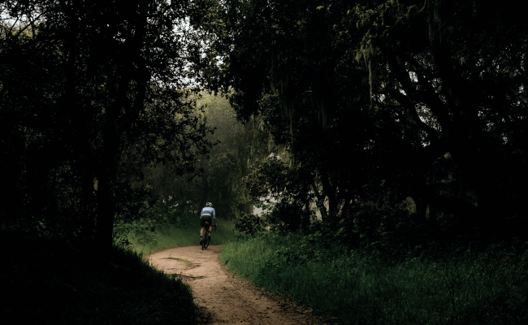
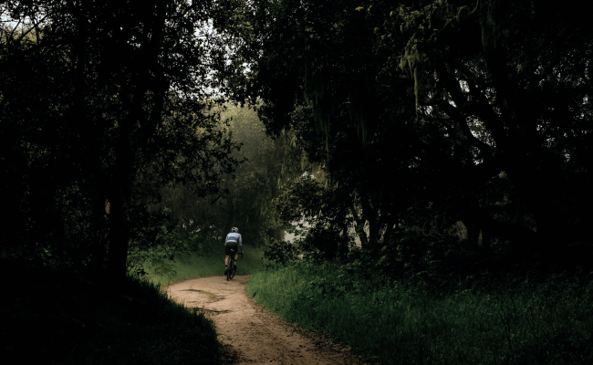

Шоссе, ТТ и Грэвел
Триатлонные старты, горные серпантины или грейвел заезды по живописным маршрутам – нужно только определиться с выбором велосипеда и отправиться в путь.
Cannondale Systemsix


«Катайся много или мало, долго или коротко, как хочешь - но катайся»Эдди МерксВелогонщик
Шоссе
 


Велосипеды


Тренировки
Чтобы найти маршрут для тренировки можно воспользоваться сервисом Komoot, а записать эти тренировки поможет приложение Strava, а также это приложение позволит построить тренировочный план.